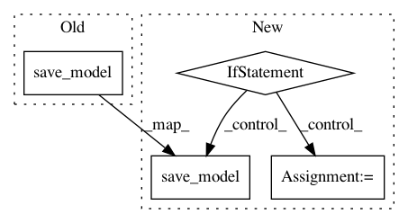

0202607e12080c34671011902edcd832c50273c0,loudml/loudml/worker.py,Worker,predict,#Worker#Any#Any#Any#Any#Any#,120
Before Change
logging.info("job[%s]: computing fingerprints for model "%s"",
self.job_id, self.model.name)
if save_prediction:
self.storage.save_model(model)
else:
logging.info("job[%s] prediction done", self.job_id)
def forecast(
After Change
elif model.type == "fingerprints":
logging.info("job[%s]: calculated fingerprints for model "%s"",
self.job_id, self.model.name)
if detect_anomalies:
hooks = self.storage.load_model_hooks(model_name)
model.detect_anomalies(prediction, hooks)
for fp in prediction.fingerprints:
key = fp["key"]
stats = fp["stats"]
max_score = stats["score"]
source.insert_times_data(
ts=prediction.to_ts,
data={ "score": max_score },
tags={ model.key: key },
measurement="scores_{}".format(model.name),
)
self.storage.save_model(model)
else:
logging.info("job[%s] prediction done", self.job_id)
def forecast(
In pattern: SUPERPATTERN
Frequency: 3
Non-data size: 4
Instances
Project Name: regel/loudml
Commit Name: 0202607e12080c34671011902edcd832c50273c0
Time: 2019-02-10
Author: sebastien.regel@gmail.com
File Name: loudml/loudml/worker.py
Class Name: Worker
Method Name: predict
Project Name: pyannote/pyannote-audio
Commit Name: f4901c2bc02a8968326022711a3c15c1e6131bfb
Time: 2017-12-15
Author: bredin@limsi.fr
File Name: pyannote/audio/callback.py
Class Name: LoggingCallback
Method Name: on_epoch_end
Project Name: UFAL-DSG/tgen
Commit Name: a3d6b8862c04894b903a269ed6f7f16a9899e320
Time: 2016-03-07
Author: odusek@ufal.mff.cuni.cz
File Name: tgen/parallel_seq2seq_train.py
Class Name: ParallelSeq2SeqTraining
Method Name: train